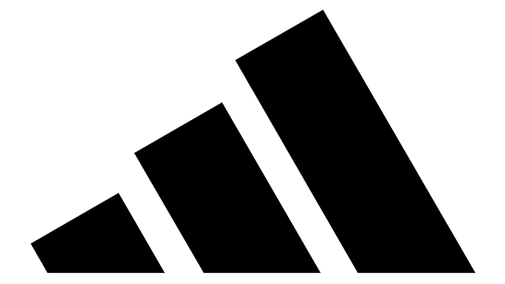

Descubre qué es el blokecore, la tendencia que mezcla camisetas de fútbol con moda urbana. Te cuento cómo se vive en Los Ángeles y por qué ya está llegando a Lima.
“Sin fútbol no existiría Adidas.” Esa fue la frase que nos dijeron en uno de los eventos en Los Ángeles. Y se quedó conmigo.
Honestamente, hizo que todo tuviera sentido: el fútbol, las camisetas y la moda blockcore conectan con algo mucho más grande que solo ropa.
Hoy, el blockcore continúa creciendo como una de las tendencias más fuertes del street style. Los football jerseys y las piezas inspiradas en el deporte ya no viven solo en las canchas: ahora forman parte de outfits cotidianos, conciertos y espacios culturales.
En ciudades como Los Ángeles, esta estética se siente natural. Y poco a poco, también empieza a ganar espacio en Lima.
El blokecore es una tendencia que mezcla el fútbol con la moda urbana. Toma elementos deportivos —como camisetas de fútbol, football jerseys y piezas retro inspiradas en equipos— y los lleva al streetwear cotidiano.
|
|
|
En Perú, las camisetas de fútbol todavía suelen asociarse más a contextos específicos:
En Los Ángeles, en cambio, forman parte del outfit cotidiano.
No importa la edad, el estilo o la personalidad. Las football jerseys se integran de manera mucho más libre al street style.
Y creo que ese cambio de mentalidad es lo que poco a poco también está empezando a pasar en Lima.
Si algo queda claro, es que esta tendencia no apareció de la nada.
Adidas Originals Football lleva años conectando el fútbol con la cultura urbana. Las camisetas, las siluetas clásicas y las tres franjas han construido durante décadas este puente entre deporte, identidad y streetwear.